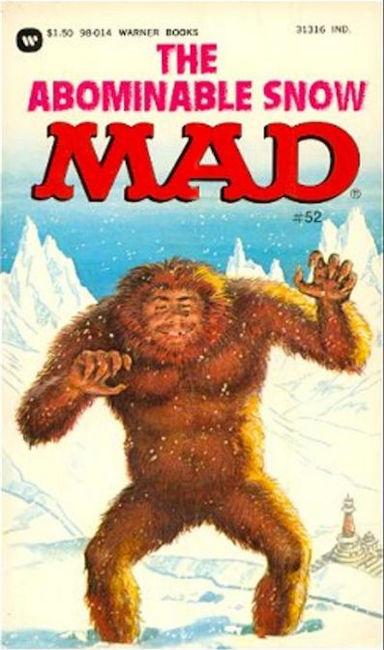
×
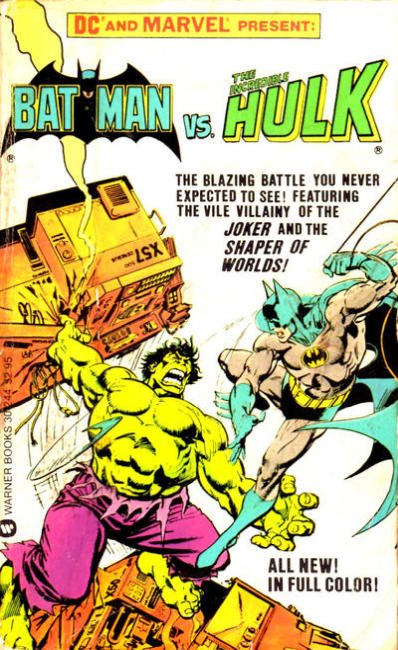
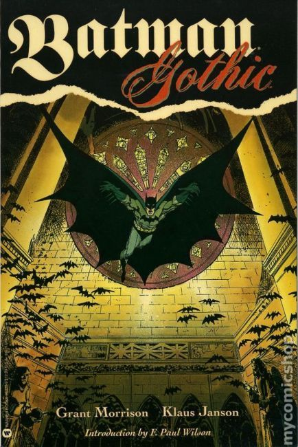
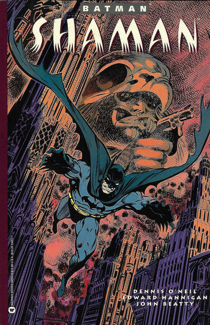
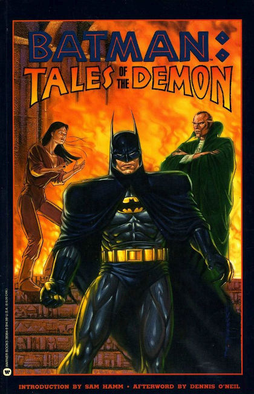
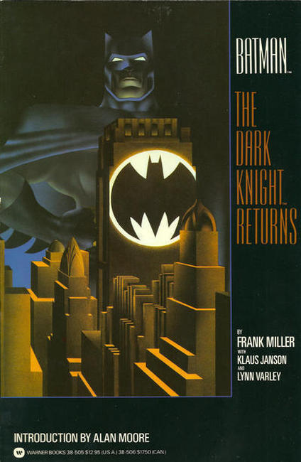
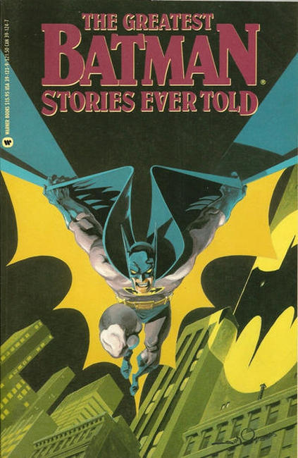
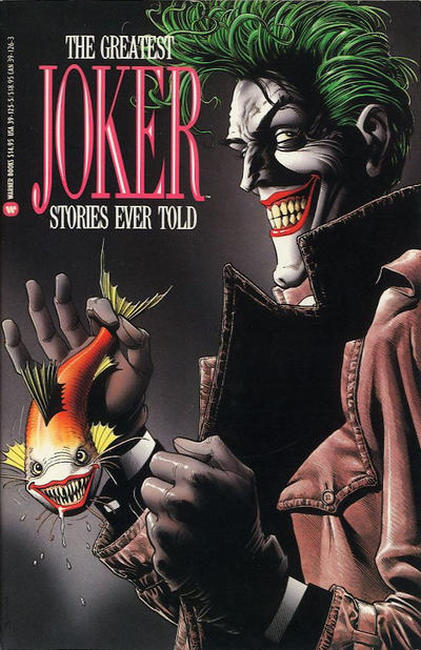
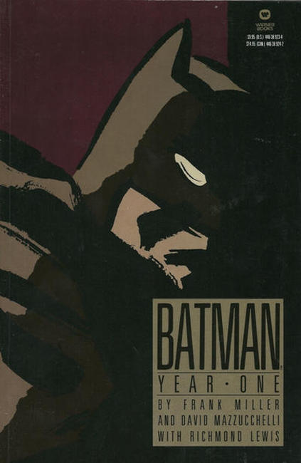
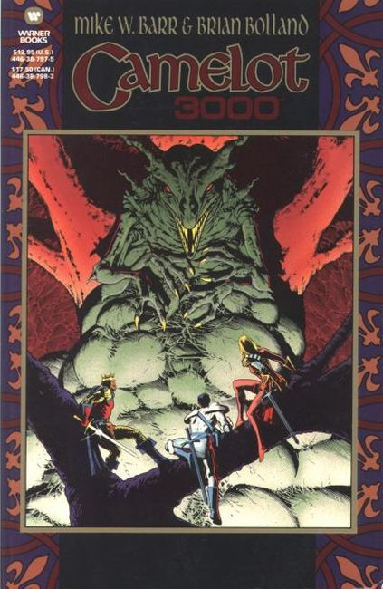
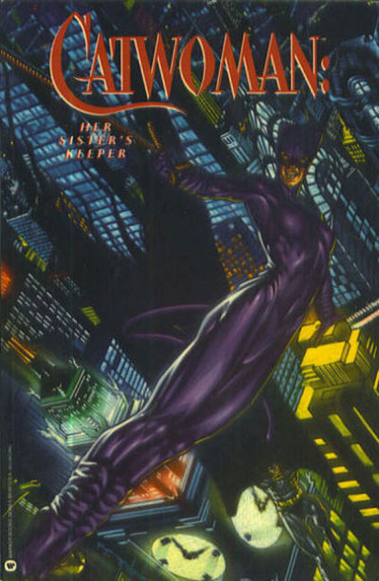
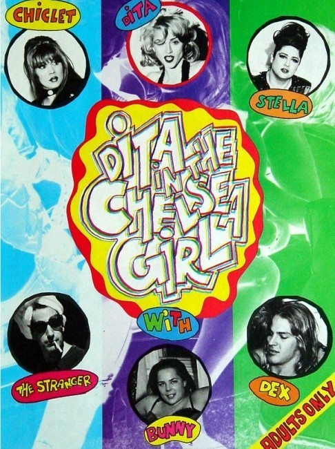
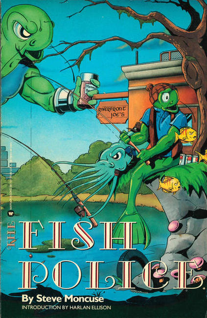
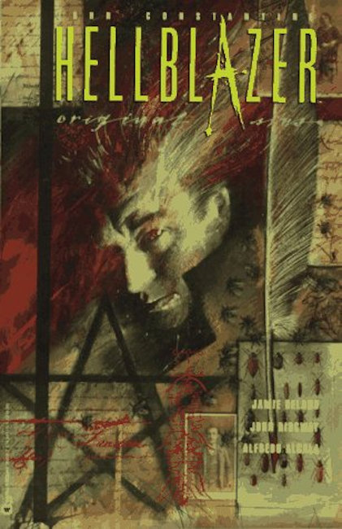
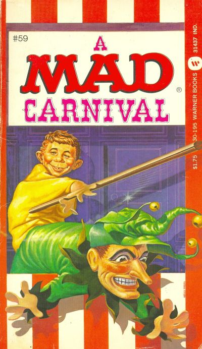
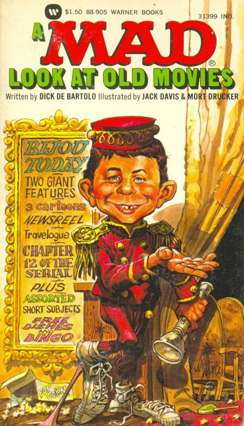
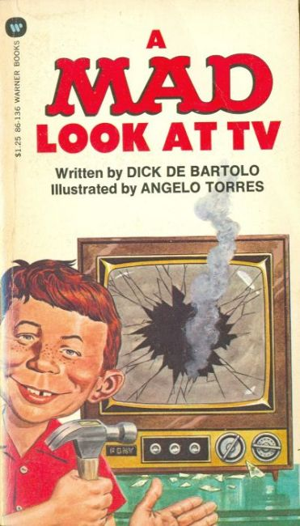
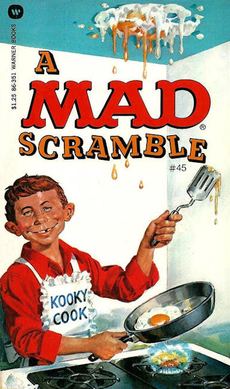
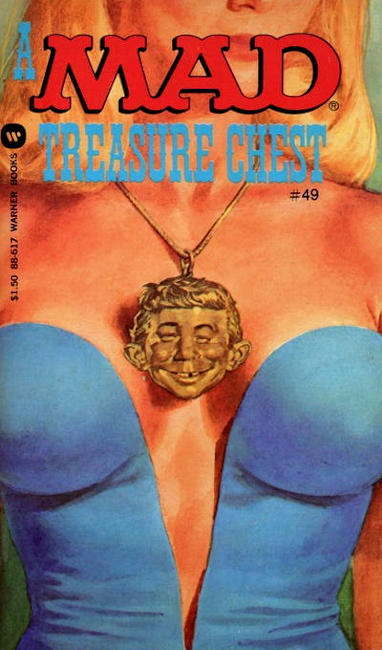
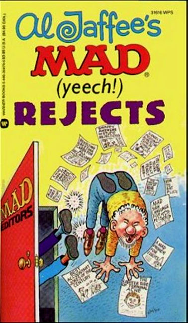
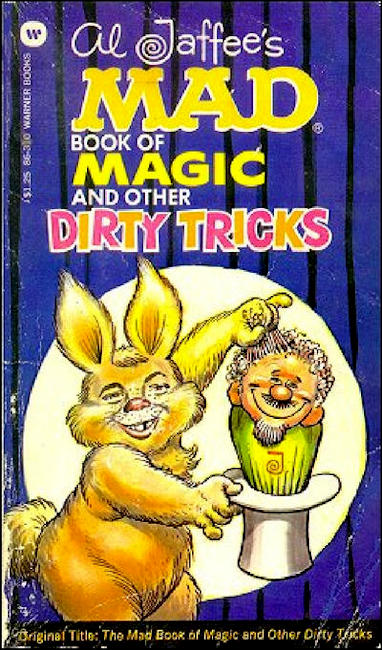
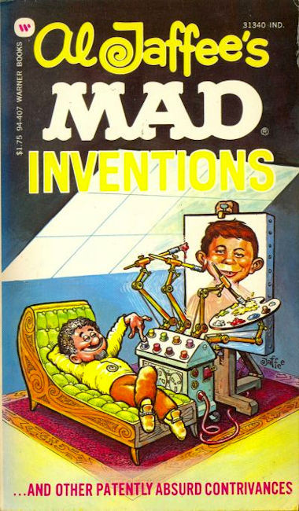
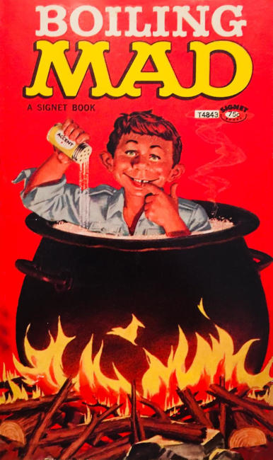
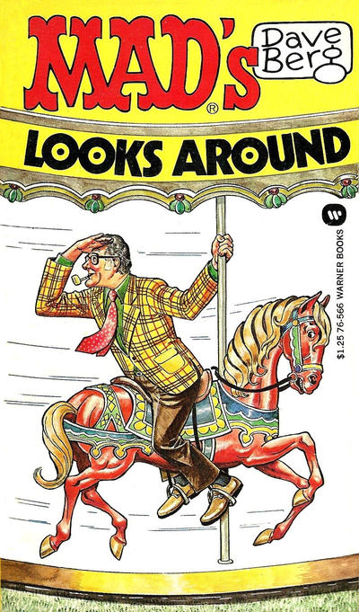
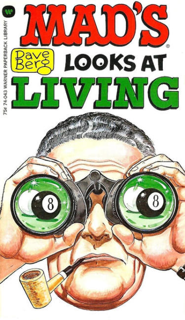
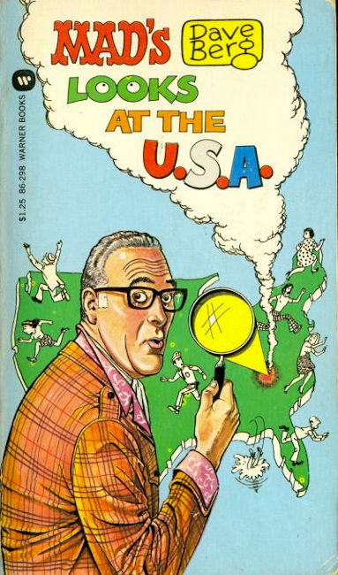
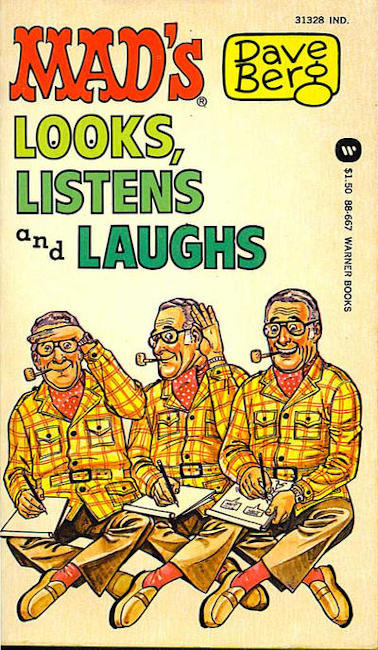
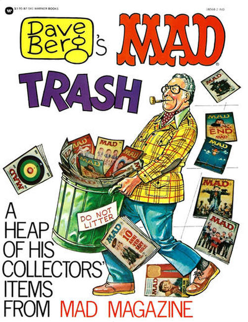
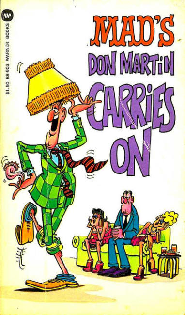
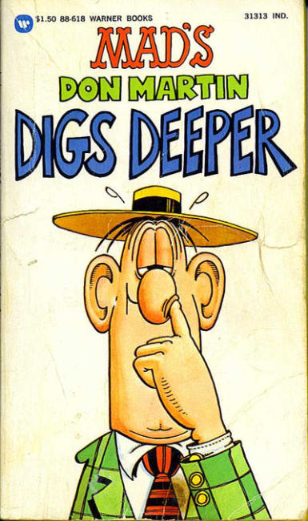
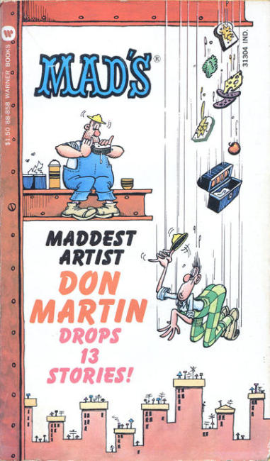
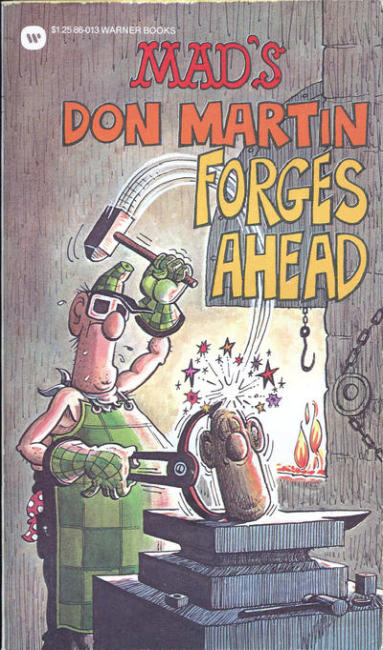
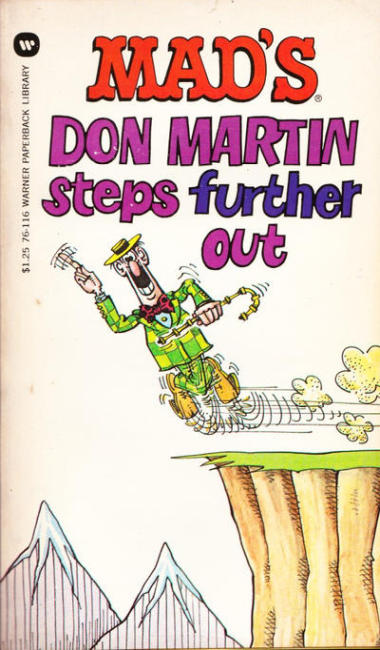
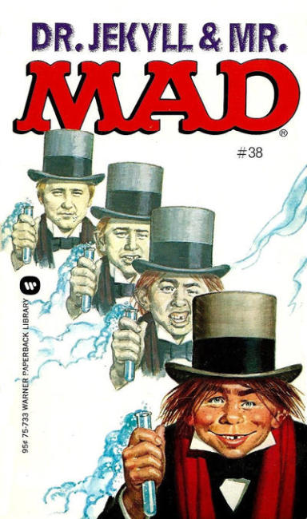
❮
❯
Warner Books Website
Warner Books began in 1970 with the acquisition of Paperback Library from Coronet Communications. In 1972 the name of the paperback line was changed to Warner Paperback Library and the name Warner Books was taken as the name for the entire publishing company. They became Time Warner after May 1990 after the merger with Time/Life, then AOL Time Warner in 2002 after the merger with America Online, and then again Time Warner in 2004. In March 2006, Warner Books was sold to Hachette Livre, who renamed it Grand Central Publishing.
Grand Central Publishing one of the big-six publishing companies, along with Harper Collins, Macmillan, Random House (Penguin), Scholastic, Simon & Schuster.
Titles
Batman: Arkham Asylum 1990
BatMan: Batman vs. The Incredible Hulk 1982
Batman: Gothic 1992
Batman: Prey 1992
Batman: Shaman 1993
Batman: Tales of the Demon 1992
Batman: The Dark Knight Returns 1986
Batman: The Greatest Batman Stories Ever Told 1989
Batman: The Greatest Joker Stories Ever Told 1989
Batman: Year One 1988
Camelot 3000 1988
Catwoman: Her Sister's Keeper 1992
Dita in the Chelsea Girl 1992
Fish Police 1987
Hellblazer: Original Sins 1993
Mad: A Mad Carnival 1982
Mad: A Mad Guide to Leisure Time 1976
Mad: A Mad Look at Old Movies 1973
Mad: A Mad Look at TV 1976
Mad: A Mad Scramble 1977
Mad: A Mad Treasure Chest 1978
Mad: Al Jaffee's Mad (Yecch!) Monstrosities 1974
Mad: Al Jaffee's Mad (Yeech!) Rejects 1990
Mad: Al Jaffee's Mad Book of Magic and Other Dirty Tricks 1976
Mad: Al Jaffee's Mad Inventions 1978
Mad: Boiling Mad 1973
Mad: Burning Mad 1975
Mad: Dave Berg Looks Around 1975
Mad: Dave Berg Looks at Living 1973
Mad: Dave Berg Looks at People 1973
Mad: Dave Berg Looks at the U.S.A. 1977
Mad: Dave Berg Looks, Listens and Laughs 1979
Mad: Dave Berg Takes a Loving Look 1977
Mad: Dave Berg's Mad Trash 1977
Mad: Don Martin Carries On 1973
Mad: Don Martin Digs Deeper 1979
Mad: Don Martin Drops 13 Stories! 1973
Mad: Don Martin Forges Ahead 1977
Mad: Don Martin Steps Further Out 1975
Mad: Dr. Jekyll and Mr. Mad 1975
Mad: Duck Edwing's Mad Ventures of Almost Superheroes 1990
Mad: Eternally Mad 1983
Mad: Fighting Mad 1974
Mad: History Gone Mad 1977
Mad: Hooked on Mad 1976
Mad: Incurably Mad! 1977
Mad: Mad About Sports 1972
Mad: Mad As Usual! 1990
Mad: Mad At You! 1975
Mad: Mad Clowns Around 1978
Mad: Mad Fold This Book! A Ridiculous Collection of Fold-Ins 1997
Mad: Mad For Kicks 1980
Mad: Mad Goes Wild 1981
Mad: Mad In Orbit 1975
Mad: Mad Overboard 1978
Mad: Mad Pantomimes 1987
Mad: Mad Stew 1978
Mad: Maddest Artist Don Martin Bounces Back! 1976
Mad: Maddest Artist Don Martin Steps Out! 1975
Mad: More Mad About Sports 1977
Mad: More Mad Snappy Answers to Stupid Questions 1990
Mad: Pumping Mad 1981
Mad: Raving Mad 1973
Mad: Sergio Aragonés Mad as a Hatter! 1981
Mad: Sergio Aragonés Mad as the Devil! 1975
Mad: Sergio Aragones Mad Menagerie 1983
Mad: Sergio Aragones's Mad Marginals! 1980
Mad: Sergio Aragonés on Parade 1982
Mad: Shootin' Mad 1979
Mad: Son of Mad 1974
Mad: Steaming Mad 1975
Mad: Super Mad 1979
Mad: Swinging Mad 1977
Mad: Viva Mad! 1975
Mad: The Abominable Snow Mad 1979
Mad: The Ages of Mad 1990
Mad: The Aimless Mad 1990
Mad: The All New Mad Secret File on Spy vs. Spy 1973
Mad: The Bedside Mad 1973
Mad: The Completely Mad Don Martin 1974
Mad: The Cuckoo Mad 1976
Mad: The Fifth Mad Report on Spy vs. Spy 1978
Mad: The Fourth Mad Declassified Papers on Spy vs. Spy 1974
Mad: The Invisible Mad 1974
Mad: The Mad Adventures of Captain Klutz 1974
Mad: The Mad Guide to Careers 1978
Mad: The Mad Pet Book 1983
Mad: The Mad Weirdo Watcher's Guide 1982
Mad: The Medicine Mad 1977
Mad: The Organization Mad 1973
Mad: The Plaid Mad 1985
Mad: The Pocket Mad 1974
Mad: The Sixth Mad Case Book on Spy vs. Spy 1982
Mad: The Third Mad Dossier of Spy vs. Spy 1972
Mad: The Vintage Mad 1976
Mad: The Voodoo Mad 1976
Mad: Three Ring Mad 1977
Prisoner 1991
Return of Mister X 1987
Saga of the Swamp Thing 1987
Sandman: Preludes & Nocturnes 1991
Super A 1977
Super AA 1978
Super B 1977
Super BB 1978
Superman and Spider-Man 1981
Swamp Thing: Love & Death 1990
V for Vendetta 1990
Watchmen 1987


{kind=link}
{kind=link}
{kind=link}
{kind=link}
{kind=link}
{kind=link}
{kind=link}
{kind=link}
{kind=link}
{kind=link}
{kind=link}
{kind=link}
{kind=link}
{kind=link}
{kind=link}
{kind=link}
{kind=link}
{kind=link}
{kind=link}
{kind=link}
{kind=link}
{kind=link}
{kind=link}
{kind=link}
{kind=link}
{kind=link}